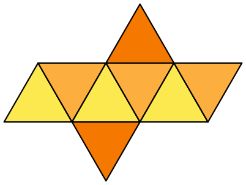

Pet pravilnih poliedara
Pet pravilnih poliedara
Oktaedar

Najvažniji elementi oktaedra:
- Površina: S=2√3a2
- Zapremina: V=√2/3*a3
- Poluprečnik upisane sfere: ru=√6/6*a

Oktaedar (grč. oktáedron - telo sa osam površina) je jedan od pet pravilnih poliedara. Omeđen je sa osam međusobno jednakih površi koje imaju oblik jednakostraničnih trouglova i raspoređene su tako da telo ima dvanaest ivica i šest temena.
Oktaedar se još može opisati i kao jednakostranična četvrostrana bipiramida a takođe i kao jednakostranična linearna antiprizma.